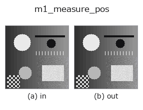

measure1d op• 데이터 종류: image → contour
• 호출: fullseye.apply(img, "m1_measure_pos", a=0.5, b=0.5)(2-D 는 이미지 1 장 + 스칼라 노브 2 개 a,b∈[0,1] 모델)
• HALCON 대응: measure_pos(의미·매개변수는 HALCON 레퍼런스가 참고가 됩니다)

*그림은 128×128 합성 입력에서 실제로 실행한 출력. 왼쪽이 입력, 오른쪽이 출력. 점군은 위에서 본 산점도(밝기 = z), 1-D 열은 꺾은선, 볼륨은 z 방향 최대값 투영, 동영상은 가운데 프레임, 복소 영상은 진폭이며, 그림이 되지 않는 반환값은 값 자체를 표시한다.*
노브 a 를 훑기(0.1 / 0.5 / 0.9, 다른 노브는 기본값):
▸ m1_measure_pos: 노브 a 스윕 (문서 사이트)
노브 b 를 훑기(0.1 / 0.5 / 0.9, 다른 노브는 기본값):
▸ m1_measure_pos: 노브 b 스윕 (문서 사이트)
다른 영상에서도(합성 장면 / 사진 / 동전. 윗줄이 입력, 아랫줄이 그 출력. 노브는 기본값):
▸ m1_measure_pos: 다른 입력 이미지 (문서 사이트)
*4열은 컬러 (H,W,3) 입력. 이 op는 채널을 넘나들지 않고 컬러를 다룰 수 있다(색 채널을 세 번째 공간축으로 컨볼루션하지 않음).*
중심을 지나는 캘리퍼 선 위의 서브픽셀 에지 위치를 추출한다(HALCON measure_pos에 해당: 사각형/원호에 수직인 직선 에지를 검출).
선은 영상 중심을 지나며, a로 방향을 theta = a*pi로 바꾼다. 휘도 프로파일을 가우시안으로 가볍게 평활화한 뒤 |d/ds gray|의 피크를 서브픽셀(3점 포물선 보간)로 검출하고, b(0~1)를 최대 진폭에 대한 상대 임계값으로 하여 약한 에지를 버린다. 반환값은 CONTOUR({"shape": (H,W), "cs": [1x2의 (row, col) 점, ...]})이며, 좌표 단위는 입력 영상의 화소. 주된 용도는 에지 수를 count_contours로 세는 것이다.
• gallery2d_contour_measure 패밀리 가이드
• measurement_uncertainty — 측정 불확도와 교정 지식 — ‘측정되고 있다’고 주장하려면
• 샘플 데이터 카탈로그(DL URL / 라이선스) —— 2-D 는 skimage.data(BSD/public)+ 합성, 3-D 는 실데이터 소스(Stanford/PDS 등)의 DL URL.
• 연산자의 내력·참고문헌 —— 이 연산자 족의 바탕이 된 연구/기법의 출처.
• 알고리즘의 정전(저자·연도)과 용도는 위의 패밀리 사용 가이드에 적혀 있습니다.
아래 프로그램은 실제로 실행됨을 확인했습니다(그림과 같은 입력). Studio 도움말에서는 이 블록이 버튼이 되어 즉시 불러와 실행할 수 있습니다.
m1_measure_pos 0.50 0.50
• gallery2d_contour_measure — py -3.11 examples/gallery2d_contour_measure.py
• poc_dimensional_inspection — py -3.11 examples/poc_dimensional_inspection.py
contour 를 입력으로 받는 것)identity · select_contours · smooth_contours · fit_line_contours · contours_to_region · count_contours · total_length · select_contours_xld
measure1d)m1_measure_projection · m1_measure_thresh · m1_measure_pairs · m1_fuzzy_measure_pos
*Provenance: ops.py — 2D 연산자 레지스트리. 이 op 노트는 tools/opdocs.py md 가 자동 생성합니다(직접 편집하지 마세요).*
© 2026 Kazufumi Furuse — Fullseye operator documentation. Licensed under Apache-2.0.